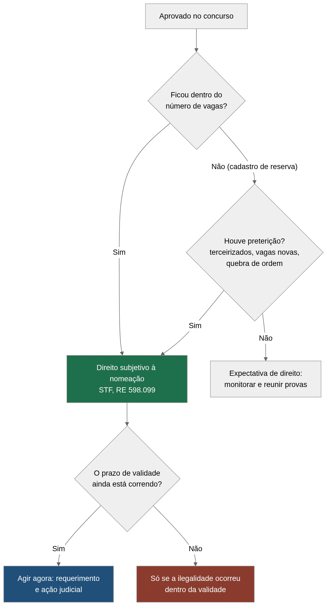

Advogado para Concurso Público: Direito à Nomeação
Você estudou por anos, largou noites de sono, abriu mão de finais de semana. Passou. E não em qualquer posição: passou dentro do número de vagas do edital. Então por que o telefone não toca? É exatamente aqui que um advogado para concurso público entra em cena, porque essa espera silenciosa raramente é o fim da história.
Muita gente acredita que aprovação garante nomeação automática. Nem sempre funciona assim na prática. A Administração às vezes empurra a convocação com a barriga, deixa o prazo correr e espera você desistir. Enquanto isso, sua vida fica em compasso de espera.
A boa notícia? Quem foi aprovado dentro do número de vagas costuma ter muito mais do que uma promessa vaga. Na maioria dos casos, existe um direito à nomeação de verdade, reconhecido pelo Supremo Tribunal Federal. E dá para exigir isso judicialmente.
Neste guia, você vai entender quando esse direito existe, quando ele é apenas expectativa e quando vale procurar um advogado para concurso público para agir antes que o prazo de validade do concurso vença. Vamos por partes, sem juridiquês.
Aprovado dentro do número de vagas: por que isso muda tudo
Primeiro, uma distinção que resolve metade das dúvidas. Ser aprovado é uma coisa. Ser aprovado dentro do número de vagas previstas no edital é outra bem diferente. Essa segunda situação carrega um peso jurídico enorme.
Quando o edital diz que existem 3 vagas e você fica classificado até a terceira posição, a Administração Pública, em regra, se comprometeu a chamar você. Não é favor. É consequência do próprio ato que ela publicou. O edital funciona como uma promessa oficial.
O que o STF decidiu sobre isso
O Supremo pacificou o tema no julgamento do RE 598.099 (Tema 161 da Repercussão Geral) — ou seja, uma decisão que vale como regra para todos os casos iguais no país. A conclusão foi direta: o candidato aprovado dentro do número de vagas previstas no edital tem, em regra, direito subjetivo à nomeação, e não mera expectativa.
O que isso significa na vida real? Que a nomeação deixa de ser um "talvez" e vira uma obrigação da Administração dentro do prazo de validade do concurso. Existem exceções, como veremos. Mas o ponto de partida joga a favor de quem passou dentro das vagas.
💡 DICA VALIOSA: Guarde o edital completo, o resultado final homologado com sua classificação e o Diário Oficial da publicação. São esses documentos que provam, preto no branco, que você ficou dentro do número de vagas. Sem eles, qualquer conversa com um advogado para concurso público começa mais lenta.
Expectativa de direito x direito subjetivo
A diferença entre esses dois termos parece técnica, mas define seu caso inteiro. Expectativa de direito é quando você "talvez" seja chamado, se sobrar vaga e vontade. Direito subjetivo é quando você "deve" ser chamado, e pode cobrar isso na Justiça.
Aprovado dentro das vagas, portanto, joga no time do direito subjetivo. Já quem ficou fora começa na expectativa, mas nem tudo está perdido. Continue lendo, porque o cadastro de reserva também tem saídas.
Por que a Administração enrola tanto
Talvez você esteja se perguntando: se o direito existe, por que o órgão não chama logo? A resposta costuma ser prosaica. Restrições orçamentárias, mudança de gestão, teto de gastos com pessoal e, às vezes, pura desorganização administrativa.
Nenhum desses motivos, por si só, apaga o seu direito à nomeação. A Administração pode até adiar a convocação por um período razoável, mas não pode transformar o adiamento em nunca. Quando o silêncio vira estratégia para deixar o prazo de validade do concurso vencer, há ilegalidade. E ilegalidade se combate na Justiça.
É justamente nesse ponto que um advogado para concurso público faz diferença. Ele separa o atraso legítimo da omissão abusiva. Um é tolerável. O outro, não.
Cadastro de reserva ou fora das vagas: você ainda tem chance?
Aqui a conversa muda de tom, mas não vira derrota. Quem foi aprovado no cadastro de reserva ou fora do número de vagas tem, em regra, apenas expectativa de direito. A Administração não é obrigada a chamar. Contudo, existem situações que transformam essa expectativa em direito à nomeação.
A palavra que abre essa porta é preterição. Preterição acontece quando a Administração desrespeita a ordem de classificação ou contrata gente por fora para fazer o serviço que era seu. Nesses casos, o jogo vira.
Veja quando um aprovado fora das vagas pode conquistar o direito de ser nomeado:
- Quando surgem vagas novas dentro da validade e há necessidade comprovada de preenchê-las.
- Quando a Administração contrata temporários ou terceirizados para a mesma função do concurso.
- Quando ela quebra a ordem e chama um candidato pior classificado antes de você.
- Quando abre um novo concurso para o mesmo cargo com aprovados ainda válidos na fila.
⚠️ ATENÇÃO: Contratação temporária ou terceirizada para a mesma função é um dos sinais mais fortes de preterição. Se o órgão diz que "não há vagas" e, ao mesmo tempo, mantém terceirizados fazendo aquele trabalho, existe uma contradição que a Justiça costuma enxergar. Documente tudo e leve a um advogado para concurso público.
O caso do candidato aprovado em 3º de 3 vagas
Imagine a Marina. Ela passou em terceiro lugar num concurso com três vagas. Dentro das vagas, portanto. Os dois primeiros foram nomeados rápido. Ela, não. O órgão alegou "questões orçamentárias" e ficou empurrando.
Enquanto o silêncio se arrastava, a validade do concurso corria contra ela. Faltando poucos meses, Marina descobriu que o setor havia contratado dois estagiários e um terceirizado para tocar exatamente as tarefas do cargo dela. Isso não é detalhe. Isso é munição.
Um advogado para concurso público analisou o caso e viu ali um direito à nomeação sólido: aprovada dentro das vagas, com preterição por contratação paralela. A hora de agir era imediata, antes que a validade vencesse de vez.
A lição do caso da Marina serve para muita gente. O "não há vagas" que a Administração repete quase sempre merece ser checado. Se existe trabalho sendo feito por terceiros na função do cargo, a alegação cai por terra. Provar essa contradição é metade do caminho.
Como identificar uma preterição no seu órgão
Nem sempre a preterição é óbvia. Ela pode estar escondida em um contrato de terceirização, num edital de processo seletivo simplificado ou até num novo concurso aberto cedo demais. Vale investigar com atenção.
Fique atento a alguns sinais. O órgão publicou edital de contratação temporária para a mesma função? Manteve terceirizados no lugar dos aprovados? Abriu concurso novo enquanto sua lista ainda era válida? Chamou alguém classificado depois de você? Cada um desses fatos pode configurar preterição e reforçar seu direito à nomeação.
Reunir essas informações não exige ser especialista. Portais da transparência, Diário Oficial e pedidos com base na Lei de Acesso à Informação ajudam bastante. Se a sua dúvida ainda é sobre a fase de provas, veja também como funciona o recurso em concurso público. Depois, um advogado para concurso público cruza os dados e monta o quadro completo.
Vale a leitura complementar sobre quando compensa entrar com ação judicial contra o concurso, que trata do custo-benefício dessa decisão.
Sua situação se parece com a da Marina? Antes de aceitar um "não há vagas" como resposta final, converse com o advogado Matheus Guerreiro. Uma análise inicial ajuda a entender se existe direito à nomeação no seu caso concreto.
Prazo de validade do concurso: o relógio que joga contra você
Agora, o ponto que mais custa caro a quem espera de braços cruzados. O prazo de validade do concurso não é infinito. E, uma vez vencido, o direito à nomeação, em regra, evapora junto.
A Constituição, no art. 37, inciso III, é clara: o concurso público tem validade de até dois anos, prorrogável uma vez por igual período. Ou seja, no máximo dois anos, mais dois de prorrogação. Depois disso, a fila de aprovados deixa de existir.
Por isso a pressa importa tanto. Se você espera "para ver se chamam" e o prazo termina, perde a chance de exigir o que era seu. O tempo, aqui, é adversário. Agir cedo é agir com força.

Repare em como as duas situações se comportam ao longo do prazo:
| Situação do candidato | Direito à nomeação | O que fazer dentro da validade |
|---|---|---|
| Aprovado dentro das vagas | Em regra, direito subjetivo (STF, RE 598.099) | Exigir a nomeação; ajuizar ação se houver omissão |
| Cadastro de reserva | Em regra, expectativa de direito | Monitorar preterição e vagas novas; reunir provas |
| Fora das vagas com preterição | Pode virar direito à nomeação | Comprovar a preterição e agir rápido |
| Prazo de validade vencido | Em regra se perde, salvo ilegalidade ocorrida dentro da validade | Poucas saídas; avaliar caso a caso com advogado |
Note como a última linha é a mais dura. Vencido o prazo, sobram poucas alternativas. Essa é a razão pela qual um advogado para concurso público insiste tanto para o cliente não deixar o tempo escorrer.
📈 RESULTADO: Candidatos que procuram orientação jurídica ainda dentro da validade têm muito mais fôlego para reverter o silêncio da Administração. Agir cedo mantém todas as portas abertas. Esperar demais fecha quase todas.
E se a prorrogação depender de ato da Administração?
Boa pergunta. A prorrogação nem sempre é automática. Em muitos editais, ela depende de um ato da autoridade dentro da vigência original. Se esse prazo passa sem prorrogação, o concurso encerra, mesmo que houvesse aprovados esperando.
Fique de olho nas datas de homologação e nos limites do edital. Marque no calendário. E, se perceber que a validade se aproxima do fim sem nomeação, não espere o último dia para buscar um advogado para concurso público.
O direito pode sobreviver ao fim do prazo?
Existe uma situação importante que muita gente desconhece. Se a preterição ou a omissão ilegal aconteceu dentro da validade, o direito à nomeação pode ser preservado mesmo que o prazo tenha se esgotado depois. Ou seja, o que conta é o momento em que a ilegalidade ocorreu.
Traduzindo: se você foi preterido enquanto o concurso ainda valia, e ajuizou a ação no tempo certo, o simples vencimento do prazo durante o processo, em regra, não apaga seu direito. Esse é um argumento técnico que um advogado para concurso público costuma usar para segurar casos que pareciam perdidos.
Mesmo assim, a regra de ouro continua a mesma. Agir cedo é sempre mais seguro do que apostar em exceções. Quanto antes você buscar orientação, mais sólida fica a sua posição.
Mandado de segurança e outras ações: como cobrar seu direito
Chegamos à parte prática. Você tem o direito, o prazo ainda corre, e a Administração não te chama. O que fazer? A resposta passa por dois caminhos principais na Justiça, e escolher bem faz diferença.
O primeiro é o mandado de segurança (ação rápida para proteger um direito líquido e certo, ou seja, um direito claro que pode ser provado só com documentos). Ele é veloz e não costuma exigir produção de provas complexas. Perfeito para quando sua situação está documentada e evidente.
Há, porém, uma pegadinha de prazo. O mandado de segurança tem prazo decadencial de 120 dias contados do ato ou da omissão ilegal. Passou disso, essa via específica se fecha. Daí a importância de contar os dias com um advogado para concurso público ao seu lado.
O segundo caminho é a ação ordinária (processo comum, mais longo, que permite discutir provas com mais profundidade). Ela não tem aquele prazo apertado de 120 dias e serve bem para casos que exigem investigar preterição, contratações irregulares e outros detalhes. Como bônus, essa via ainda permite discutir uma eventual indenização pelo atraso na nomeação, algo que o mandado de segurança, em regra, não alcança.
Qual caminho combina com o seu caso?
Depende de quão claro está o seu direito e de quanta prova o caso exige. Um direito evidente, com documentos na mão, pede a velocidade do mandado de segurança. Um caso que precisa desenterrar contratos e comprovar preterição pode pedir a ação ordinária.
Veja um comparativo simples entre as duas vias:
| Critério | Mandado de segurança | Ação ordinária |
|---|---|---|
| Velocidade | Rápido | Mais demorado |
| Prazo para entrar | 120 dias do ato ilegal | Sem esse prazo curto |
| Tipo de prova | Só documentos (direito claro) | Permite provas variadas |
| Melhor para | Aprovado dentro das vagas com omissão evidente | Casos de preterição que exigem investigação |
| Indenização por atraso | Em regra, não | Pode ser discutida |
A escolha certa não é chute. Ela nasce da análise do seu caso, dos documentos e dos prazos. Por isso, antes de qualquer petição, vale sentar com um advogado para concurso público e mapear a estratégia.
E a liminar? Dá para ser nomeado antes do fim do processo?
Sim, em alguns casos. Tanto no mandado de segurança quanto na ação ordinária, o juiz pode conceder uma decisão provisória, chamada de liminar ou tutela de urgência, para determinar a nomeação enquanto o processo corre. Isso acontece quando o direito parece claro e há risco na demora.
Não é garantido, claro. A liminar depende de o juiz se convencer, logo de início, de que você tem razão e de que esperar traria prejuízo. Um pedido bem fundamentado aumenta as chances. Aqui, de novo, a experiência do advogado para concurso público pesa na forma de apresentar os fatos e as provas.
Vale registrar um ponto honesto. Mesmo com liminar, a Administração pode recorrer, e a decisão final pode demorar. Por isso ninguém sério promete resultado. O que se promete é trabalho técnico e defesa firme do seu direito.
Não sabe se o seu caso pede mandado de segurança ou ação ordinária? Essa decisão é técnica e o prazo pode estar correndo. Converse com o advogado Matheus Guerreiro para avaliar o melhor caminho, sem promessas mágicas, apenas orientação clara e honesta.
Documentos e passos práticos: como se preparar antes de acionar a Justiça
Você não precisa entrar na Justiça no escuro. Quanto mais organizado, mais forte fica seu caso e mais rápido o advogado trabalha. Preparação vale ouro, principalmente quando o prazo de validade do concurso aperta.
Comece reunindo o básico. Depois, junte o que prova a omissão ou a preterição. A lógica é simples: mostrar que você tinha direito e que a Administração falhou.
✅ CHECKLIST RÁPIDO: Antes de procurar um advogado para concurso público, tenha em mãos: - Edital completo do concurso, com o número de vagas. - Resultado final homologado, comprovando sua classificação dentro das vagas. - Publicações no Diário Oficial (homologação, nomeações de outros aprovados). - Provas de preterição, se houver (contratos temporários, terceirizados, novo concurso). - Comprovante do prazo de validade e de eventual prorrogação. - Requerimento administrativo, se você já pediu a nomeação e foi ignorado.
Vale a pena pedir na esfera administrativa primeiro?
Em muitos casos, sim. Protocolar um requerimento administrativo pedindo a nomeação cria um registro da omissão. Nos concursos federais, o regime de posse e nomeação está na Lei nº 8.112/1990. Se o órgão negar ou ficar em silêncio, você tem a data do ato ilegal, que ajuda a marcar o início do prazo de 120 dias do mandado de segurança.
Não é obrigatório em todas as situações, mas costuma fortalecer o caso. Um advogado para concurso público avalia se, no seu cenário, esse pedido prévio ajuda ou apenas atrasa. Cada caso tem sua estratégia.
Quando faz sentido contratar um advogado especializado
Nem toda espera vira ação judicial. Às vezes a nomeação está só atrasada e vai sair. Outras vezes, o silêncio esconde uma ilegalidade que precisa ser enfrentada. Saber diferenciar os dois cenários é justamente o trabalho de quem entende do assunto.
Faz sentido buscar um advogado para concurso público quando você passou dentro das vagas e não foi chamado ou quando percebe contratações paralelas. Também vale procurá-lo quando a validade se aproxima do fim ou quando o órgão simplesmente ignora seus pedidos. Nessas horas, a orientação certa evita que você perca prazo e direito por falta de informação.
Vale reforçar, com toda a honestidade: nenhum advogado sério promete ganho de causa. O que um bom profissional oferece é análise técnica, estratégia adequada e a defesa firme do seu direito à nomeação dentro das regras. O resto depende dos fatos e da Justiça.
Perguntas frequentes sobre o direito à nomeação
Estas são as dúvidas que mais aparecem na primeira conversa com quem passou e não foi chamado.
Aprovado dentro do número de vagas tem direito à nomeação?
Em regra, sim. O STF, no RE 598.099 (Tema 161 da Repercussão Geral), reconheceu que o candidato aprovado dentro do número de vagas do edital tem direito subjetivo à nomeação, e não mera expectativa, respeitado o prazo de validade do concurso.
Quem está no cadastro de reserva pode ser nomeado?
Em regra, o cadastro de reserva gera apenas expectativa de direito. Esse quadro muda quando existe preterição: contratação temporária ou terceirizada para a mesma função, surgimento de vagas novas com necessidade comprovada, abertura de concurso novo com lista válida ou quebra da ordem de classificação.
Qual é o prazo para entrar com mandado de segurança?
O mandado de segurança tem prazo decadencial de 120 dias, contados do ato ou da omissão ilegal. Vencido esse prazo, essa via específica se fecha, embora a ação ordinária continue possível para discutir o mesmo direito.
Quanto tempo dura a validade de um concurso público?
A Constituição prevê validade de até dois anos, prorrogável uma vez por igual período. Na prática, o teto é de quatro anos. A prorrogação nem sempre é automática: em muitos editais ela depende de ato da autoridade dentro da vigência original.
Perdi o prazo de validade. Ainda dá para fazer alguma coisa?
Depende de quando a ilegalidade aconteceu. Se a preterição ou a omissão ocorreu enquanto o concurso ainda valia, o direito pode ser preservado mesmo que a validade termine depois. Quando nada de irregular aconteceu dentro da validade, as alternativas ficam bem restritas.
O juiz pode mandar nomear antes do fim do processo?
Pode, por liminar ou tutela de urgência, tanto no mandado de segurança quanto na ação ordinária. Isso exige que o direito apareça claro desde o início e que a demora traga prejuízo. Não é garantido, e a Administração ainda pode recorrer da decisão.
Se você passou dentro do número de vagas e a nomeação não chega, não deixe o prazo de validade do concurso decidir por você. Fale com o advogado Matheus Guerreiro para uma análise do seu caso. Entender seu direito à nomeação hoje pode ser a diferença entre conquistar a vaga ou ver a oportunidade escorrer pelas mãos.